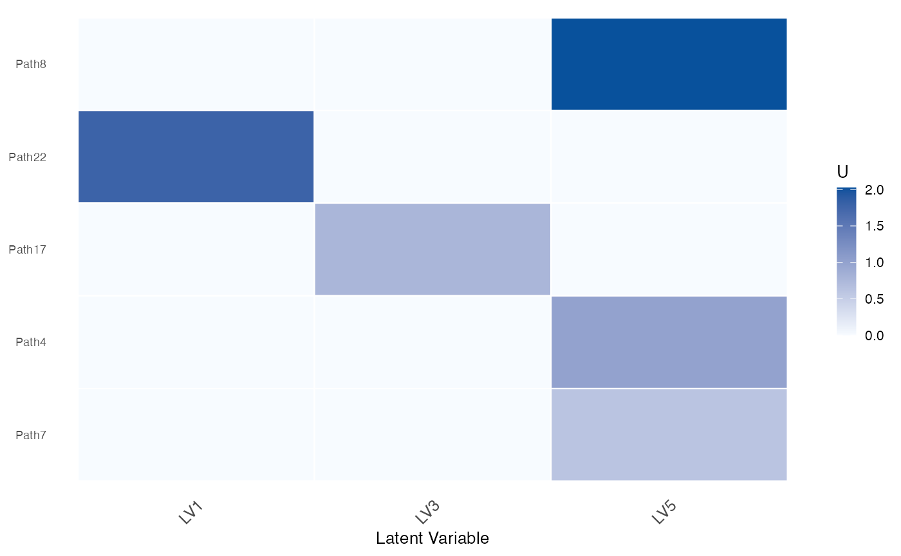

Displays the pathway loading matrix U after filtering by AUC and FDR
thresholds. Only the top-top pathways per LV are shown.
Usage
CLAMPplotU(
clampRes,
auc.cutoff = 0.6,
fdr.cutoff = 0.05,
indexCol = NULL,
indexRow = NULL,
top = 3,
sort.row = FALSE,
cluster.rows = TRUE
)Arguments
- clampRes
A CLAMP result list containing at least
U,Uauc,Up, andsummary.- auc.cutoff
Minimum AUC threshold; entries below this are set to zero. Default
0.6.- fdr.cutoff
Maximum FDR threshold for pathway significance filtering. Default
0.05.- indexCol
Integer vector of LV column indices to include.
NULLuses all LVs.- indexRow
Integer vector of pathway row indices to include.
NULLuses all pathways.- top
Number of top pathways to retain per LV. Default
3.- sort.row
Logical; if
TRUE, rows are sorted by the dominant LV. DefaultFALSE.- cluster.rows
Logical; if
TRUE(default), rows are reordered by hierarchical clustering (overridden whensort.row = TRUE).
Value
Invisibly returns a ggplot2::ggplot() object.
Examples
set.seed(42)
pathways <- paste0("Path", 1:30)
lvs <- paste0("LV", 1:5)
U <- matrix(abs(rnorm(30 * 5)),
nrow = 30,
dimnames = list(pathways, lvs)
)
Uauc <- matrix(runif(30 * 5, 0.5, 1.0),
nrow = 30,
dimnames = list(pathways, lvs)
)
Up <- matrix(runif(30 * 5, 0, 3),
nrow = 30,
dimnames = list(pathways, lvs)
)
# Build a minimal summary table
nr <- 30 * 5
summ <- data.frame(
pathway = rep(pathways, 5),
LV = rep(lvs, each = 30),
AUC = as.vector(Uauc),
p_value = runif(nr, 0, 0.1),
FDR = runif(nr, 0, 0.1),
stringsAsFactors = FALSE
)
clampRes <- list(U = U, Uauc = Uauc, Up = Up, summary = summ)
CLAMPplotU(clampRes, auc.cutoff = 0.6, fdr.cutoff = 0.1, top = 3)
